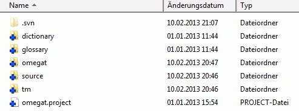
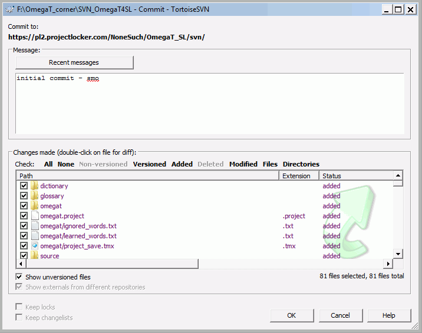

OmegaT中的协作翻译基于版本控制功能，该功能广泛应用于软件社区的程序代码维护和开发团队内部的无阻碍协作。OmegaT支持两种流行的版本控制系统（简写为VCS）：Apache Subversion（在命令名称svn后常被简称为SVN）和Git。版本控制系统给团队成员带来的好处可概括如下：
-
多个团队成员可同时工作在一个翻译项目而不会彼此冲突
-
他们可以共用材料，如项目的翻译记忆和词汇表
-
缺省情况下，每三分钟就会把更新的版本分享给团队其他成员
-
由系统维护共享数据的版本
-
可以发现并解决冲突（例如相同片段或术语的可选译文）
这里对后面的文本中使用的术语作个简短的说明：
-
VCS服务器：即SVN或Git服务器是网上保存和维护公用材料的地方。服务器可以在本地网络，但大部分情况下它在因特网上，即通过网址访问。项目的其中一个成员——项目管理员，需要熟悉服务器端事务，即设置工作环境、导入OmegaT项目、设置团队成员的访问权限、解决冲突等。
-
VCS客户端：要和服务器连接，SVN或Git客户端必须安装在包含OmegaT项目的“项目管理员”的电脑上。Windows系统中最常用的客户端分别为TortoiseSVN和TortoiseGit。其他操作系统（Linux、OS X）提供了类似的软件。
-
版本库：保存和维护共享材料的位置，在本地网或因特网上。项目成员需要VCS客户端与其连接。
-
检出：该操作从版本库创建工作副本到本地电脑。服务器维护了检出的信息，所以以后的提交（参阅下面）可以平滑地进行。
-
提交：当检出材料的新的本地版本准备好后，就可以提交到版本库而共享给团队其他成员。服务器会确保在两个成员工作于相同的检出内容时引起的冲突得到解决。
-
管理员：创建和维护版本库（如处理服务端事务）的人。要避免问题，最初的设置中每个人只应该具有基本的这些权利。
-
用户：团队成员，协作于共同的项目。
有两种运行SVN服务器的方式：可以把SVN安装在自己的服务器或使用托管服务。使用外部服务时您必须注意到可能的机密泄漏，因为您是在不受自己直接控制的服务器上加载文档的。或者，为了避免此问题您可以建立私有的SVN服务器，例如如果您已经有了包含正在讨论的软件（如VisualSVN）的Apache服务器。
有了SVN服务器，那么项目管理员需要在本地安装SVN客户端用来管理电脑上的项目内容。对于Windows我们推荐TortoiseSVN。对于Mac您可以从如SourceForge站点下载客户端，对于Linux请参阅Subversion命令和脚本。
这里所说的过程依赖于由ProjectLocker提供的免费的SVN服务器（限制2个用户）。请注意版本库的创建者默认具有他所创建的版本库的管理权限。首先登录到该站点，如果您是第一次到这个站点，请先注册并保存用户名和密码以用于之后的项目。
-
在ProjectLocker上创建新项目
-
输入版本库的名称和说明。（这里举的例子为
OmegaT和OmegaT SL本地化） -
选择
-
点击
在您的账户中打开Projects视图。项目服务下的网址将被SVN用来从客户端连接到您刚建立的SVN服务器。这里还可以添加团队成员到项目中并为他们分配权限。需要注意的是团队成员必须先注册，您才能把他们添加到项目中（注意：在ProjectLocker的免费版本中每个项目只允许添加两个成员）。
您可以根据自己的开发风格和需求管理项目。与OmegaT项目类似，对于不同的语言对您需要使用各自的版本库。在指定的语言对中最好像单独的版本库一样保存不同的主题及客户。替代方案是在一个版本库中包含Project1、Project2等子文件夹，并通过公共的tm、glossary和dictionary文件夹共用相同的材料。
为了简便，这里的例子中我们决定为OmegaT项目使用单个版本库。
此时版本库是空的。您先在磁盘上创建空的客户端文件夹。在保存项目的位置创建空文件夹并在上面点击右键。选择 TortoiseSVN>检出后显示下面的对话框：

把ProjectLocker提供的网址输入到版本库网址字段。确保检出目录无误，即指定您创建的空文件夹并按下OK。操作完成后，您可以检查刚才所说的目录：现在它应该包含.svn子文件夹且图标上含有绿色的就绪标记，这表示该文件夹的内容是最新的。
下一步中，要添加OmegaT文件到本地文件夹。下面的文件用于在团队成员中共享，因此在任何情况下都必须包含它们：
-
omegat项目文件——
omegat.project -
翻译记忆——
omegat\project_save.tmx -
源文件夹的内容
-
项目专用的过滤器定义文件——
omegat\filters.xml
管理员还可以决定包含后面这些文件夹及其内容：tm、glossary和dictionary。还有omegat文件夹中的ignored_words.txt和learned_words.txt也许值得在团队中共享和维护。在任何情况下都必须排除omegat子文件夹中的bak文件、project_stats.txt及project_stats_match.txt，因为它们除了让版本库变得臃肿外得不到丝毫好处。您可以把相同的设置用于target文件夹及其内容。
在复制必须的文件到检出文件夹后您会发现它的图标改变了：绿色的就绪标记变成红色的感叹号，这表示版本库的本地副本发生了变化。通过下面的两个步骤可以把最新的版本传到服务器：
-
添加已复制的文件到版本库的本地版本：右键点击检出文件夹并选择TortoiseSVN>添加。在出现的对话框中，让所有设置保持默认并点击 OK。添加结束！窗口，类似于下面会出现的一个：

检出文件夹的内容会进行相应的标记：
 -
提交本地更新到服务器：在本地检出文件夹上点击右键并选择SVN提交…。提交窗口——请参阅下面。选中发生的变更——在这里即是刚添加的文件夹和文件。
输入相应的信息到信息框并按下OK。将打开提交窗口并显示提交进度。它会首先提交当前内容到服务器版本库，接着更新版本库的本地副本（即.svn子文件夹的内容），这样它就是版本库的最新版本了。
-
从本地版本库副本更新本地文件——从服务器版本库的.svn子文件夹接收到的变更但还不是文件和文件夹本身的更新。要更新本地文件，右键点击检出文件夹并选择SVN更新。检查文件夹的内容以确认与服务器中的最新版本相对应的版本库和相应文件及文件夹的本地副本：